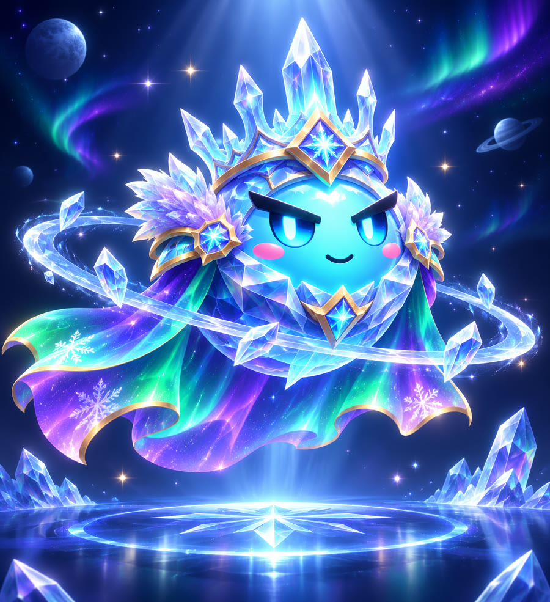
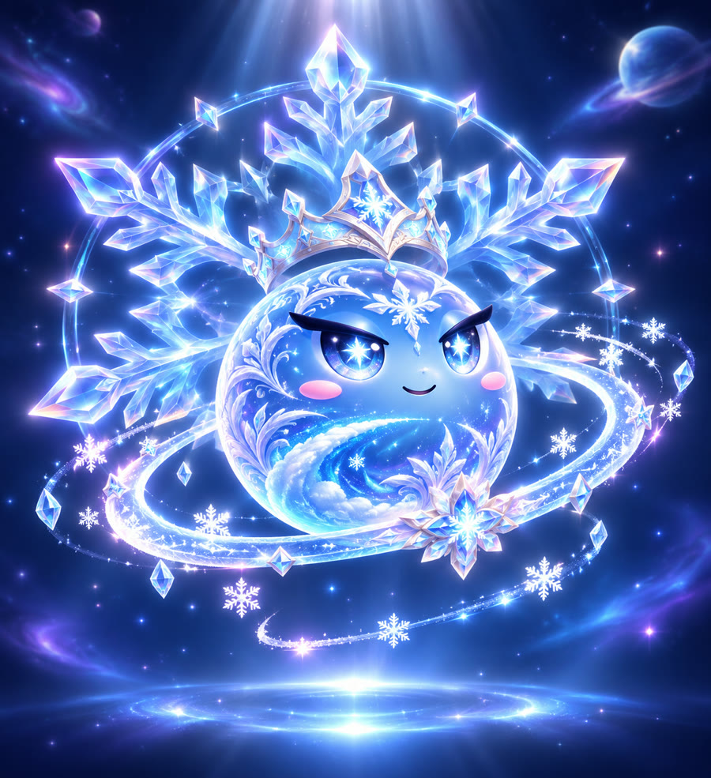
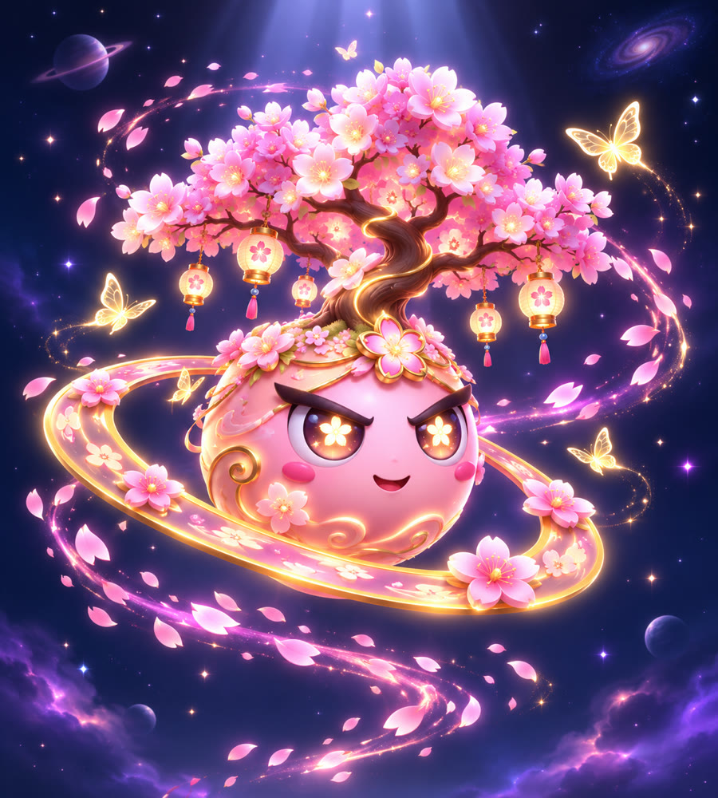
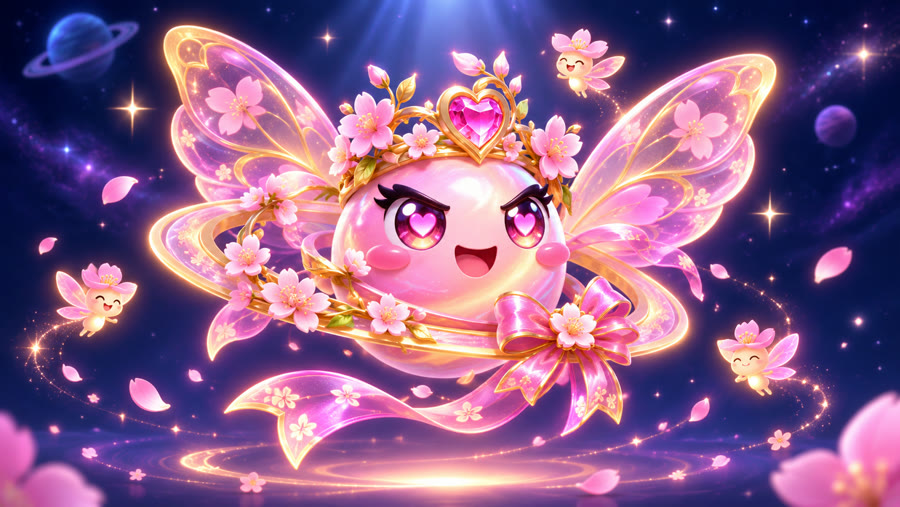

전설 스킨 콘셉트 — 테마마다 3안
2026년 11월 24일. 상점에 걸릴 대표 이미지처럼 한 장씩 만든 시안입니다 (OpenAI gpt-image-2 생성, 실제 게임 화면 아님). 테마마다 마음에 드는 안을 골라 주세요. 섞어서 골라도 됩니다 (예: B 몸 + A 장식).
크리스마스
A. 산타 선물왕
산타 모자·하얀 수염, 몸이 리본 선물상자 더미에 반쯤 묻힘, 루돌프 썰매가 금빛 꼬리를 그리며 돎

B. 별빛 트리
행성 자체가 장식된 크리스마스트리 공, 꼭대기 큰 금별이 빛줄기를 쏨, 리본 띠가 감김
C. 스노글로브
유리 스노글로브 안에 불 켜진 눈 마을과 트리, 안에서 눈이 휘날림, 금·빨강 받침과 리본
얼음

A. 서리 군주
결정 갑옷과 빛나는 핵, 얼음 첨탑 왕관, 오로라 망토, 도는 얼음 조각 고리

B. 서리 드래곤
얼음 뿔·결정 비늘·투명한 얼음 날개와 꼬리, 서리 입김

C. 눈꽃 정령
속에 눈보라가 도는 투명 구슬, 뒤로 커다란 눈꽃 후광, 서리 무늬
블랙홀·사신

A. 꼬마 사신
금테 보라 두건, 별 눈동자, 빛나는 초승달 낫, 보랏빛 소용돌이 원반
B. 공허의 포식자
새까만 구슬에 빛나는 지평선 테두리, 은하가 도는 큰 입, 행성·별을 빨아들임
C. 은하 마법사
몸이 성운으로 소용돌이, 밤하늘 마법사 모자와 초승달, 성운 망토, 별 지팡이와 별자리
벚꽃

A. 벚꽃 정령
머리에서 자란 만개한 벚꽃 나무와 작은 등불, 나선형 꽃잎 폭풍, 금빛 나비

B. 벚꽃 여우신
하얀 여우 귀·여우 가면, 끝이 빛나는 꼬리 셋, 분홍 도깨비불, 방울 달린 금줄

C. 봄의 공주
벚꽃과 금 덩굴 왕관·하트 보석, 투명하게 빛나는 나비 날개, 꽃잎 띠